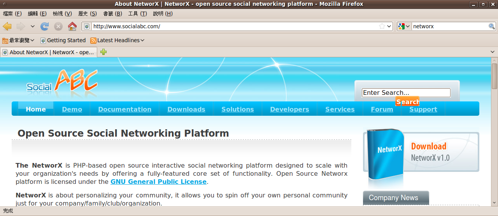
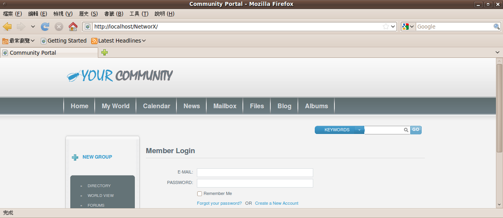
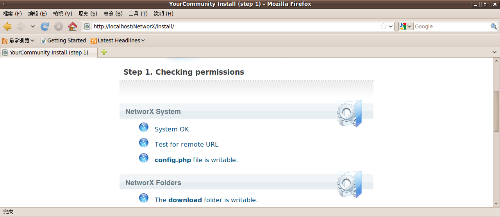
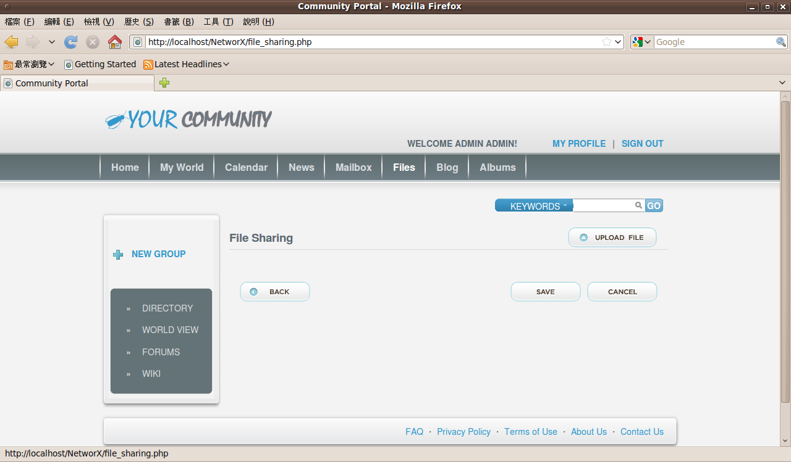
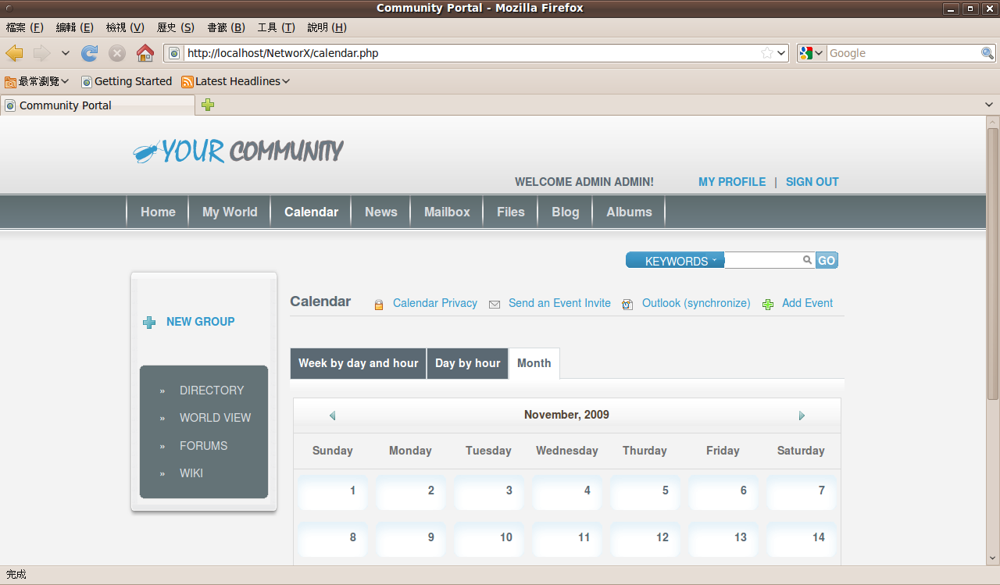
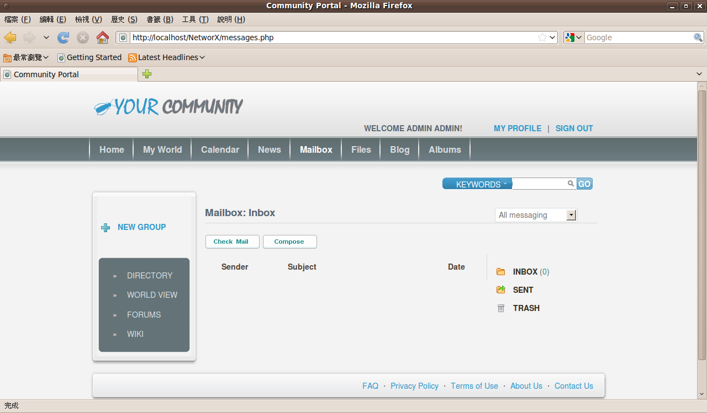
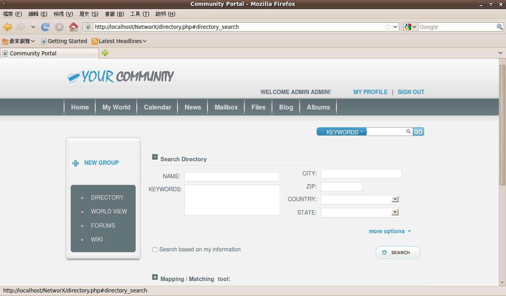

也紀念我們永遠的朋友 李士傑先生（Shih-Chieh Ilya Li）。
管理介面直覺易操作 - 打造 NetworX 互動型社交網站
NetworX 是一套以 PHP 撰寫的互動型社交網路平台，符合各種規模的公司或組織在網站架設上的需求。除了可以應用在公司或組織等團體的使用環境之外，也能作為社群的交流平台。此外，更允許使用者自行調整設定，讓 NetworX 更加切合自身的需求。
如果要投票表決目前在網際網路上最為流行的網站應用為何，許多人多半會將票投給微網誌與社交網站平台。的確，這兩種網路服務雖然不能說是一夕爆紅，但從台灣過去幾個月的媒體報導來看，似乎給人一種如果不知道這兩種網站服務為何，便已經跟不上流行的感覺。經由新聞媒體的大肆渲染之後，相信大多數人就算沒玩過 Facebook，也都知道上面有一個「開心農場」的小遊戲。
NetworX 軟體小檔案
軟體版本：1.0.2
軟體性質：GNU General Public License (GPL)
使用限制：無
官方網址：https://www.socialabc.com
下載網址：https://sourceforge.net/projects/networx/files/NetworX-src-1.0.2.zip/download（11.6MB）

▲NetworX官方網站
事實上，像 Facebook 這樣的社交網站只是利用小遊戲增進會員中的彼此互動，並吸引使用者停留在網站中，但這些小遊戲並不是社交網站的主要訴求。所謂的社交網站，注重的畢竟還是人與人之間的交流，而不是讓人沈迷其中的小遊戲。
本文所要介紹的 NetworX，本身也是一套社交網站的架設平台。或許一提到這是社交網站的架設工具，便會先讓人產生負面印象。但事實上 NetworX 只是一套相當單純的社交網站平台，本身並沒有提供小遊戲的功能，所以可以讓使用者更加注重在社交網站的基本核心，也就是利用網站介面作為彼此溝通聯絡的管道。
從 NetworX 所提供的主要功能來看，更可以驗證這個說法。例如個人資料的編寫可以讓所有人了解某個使用者的專長與興趣，留言系統可以讓對社群有想法或意見的人直接留下訊息。部落格功能可以作為資訊、新聞或最新消息的分享平台，而論壇功能則可以讓使用者進行討論，以便針對特定議題發表個人的看法。
至於互動式的事件行事曆、檔案共享以及邀請其他人加入特定群組的功能，也是 NetworX 的重點所在。如果架設網站時考慮的主要項目是在管理工具上， NetworX 的管理介面也不會讓人失望。NetworX 的管理介面相當直覺且易於操作，更擁有強大的報表與統計功能，可以讓系統管理者直接得知社群成員的統計資料和相關的活動列表。
NetworX 是一套以 PHP 撰寫的互動型社交網路平台，可以提供全方位的特點，以符合各種規模的公司或組織在此方面網站架設的需求。除了可以應用在公司或組織等團體的使用環境之外，也能作為社群的交流平台。使用者可以自行進行各種調整，讓 NetworX 更加切合自己的需求。

▲NetworX 的主畫面。
使用 NetworX 來建立自己的社交平台相當簡單，只需要花費幾分鐘進行安裝與設定，即可完成整個架站作業。無論是學校、班級或宗教團體等小型群組，或是較為專業的醫師、律師等團體，都能利用 NetworX 作為彼此溝通交流與互動的線上平台。有了這樣的社交平台，所有人便能以較為快速的方式將資訊傳遞給社群中的所有人；而網路上的其他使用者，如果需要尋找相關的資料時，也可以從此網站中取得自己所需要的重要資訊。
至於網路上實際採用 NetworX 的案例，則包含了以社交功能為主要訴求的入口網站、公司行號的內部網站、線上媒體（包含雜誌、報紙以及各種出版品的業者）、電子商務，以及其他非營利性的組織等等。

▲NetworX 的安裝相當容易，只需幾個簡單的步驟即可完成。
◎ NetworX的特色
要成為社交網路平台的最佳選擇，NetworX 自然提供了許多獨樹一格的特色，其中比較主要的有三十餘項之多，而且每一項功能都能獨自加入或移除，讓使用者在建立社群網站時有更多的自主性，可以成立一個獨一無二的網站。
※ 社交媒體
像 NetworX 這樣的網站平台，本身便是以幫助人群彼此連接與進行互動為設計的主要目的。網站上的使用者可以建立自己的個人資料，並分享自己的專長、興趣。使用者也能在自己的群組中加入新朋友或是聯絡人，分享自己的相片與影片，也能讓朋友得知自己目前的動態與想法。
※ 媒體收集
NetworX 本身所提供的媒體收集功能，可以讓使用者上傳相片或影片，並使用網頁方式進行共享。在上傳檔案時，如果要上傳的檔案數量較多，可以利用大量媒體上傳程式進行。此程式允許一次上傳最多高達一百張相片至個人的網頁中。已經上傳至社交網路平台的相片，則可以另外建立相簿以進行分類與管理，讓所有使用者都能以最快速的方式找到相關的圖片或影片。

▲NetworX 的檔案分享功能，可讓使用者將相片或影片分享給他人。
※ 線上事件
NetworX 內建的事件行事曆功能，讓使用者與其他人的互動更加密切，並且可以進行活動的推廣與宣傳。使用者除了可以透過 NetworX 將自身相關的事件分享給其他人以外，也能參與其他使用者的事件。
有需要的話，也可以持續追蹤特定事件，以便在第一時間得知相關的訊息。這些動作彼此都能夠互相進行，也就是說，使用者可以參與別人的事件或活動，其他使用者亦能參加自己的事件。
線上事件的功能可以讓使用者以非常簡潔便利的方式公開自己的既定行程，並分享相關資訊給網站上的所有使用者，例如新產品的上市展示、各種週年慶活動、特賣會等等。
藉由 NetworX 的行事曆元件，除了讓使用者安排自己未來的行程之外，也增加其他使用者參與自己所安排活動的機會，亦可提高雙方彼此的互動程度，可說是一舉數得。

▲NetworX 的行事曆除了可以記載自己未來的行事計畫之外，也能公開給其他人作為參考。
※ 簡訊功能
NetworX 所建立的社群網站，與各種主要的論壇系統雷同，都提供簡訊功能以供使用者彼此互相聯絡使用。一些網站系統會將簡訊功能稱為私人訊息，因為這些訊息通常是以私下傳送的方式進行，只有傳送與接收端的帳號擁有者才能得知訊息的內容，不必擔心訊息內容被外人得知。
也因為簡訊功能具有相當程度的私密保護功能，所以在需要於社群中進行較為機密的資訊傳遞時，都能利用此功能進行資料交換。如此一來，個人的私人資料不會在公開的網路中被顯示出來，自然也就減少了許多個人資料外洩的困擾。而為了確保簡訊內容不會被外人取得，無論是訊息的發送者或接收者，在存取該則簡訊時都需要先行登入系統，驗證過身分後才能進入收件匣取得訊息的內容。

▲簡訊功能提供了相對較為隱密的溝通方式。
※ 會員群組
網站中的所有會員都是來自於真實社會，所以社群網站也等於是一個小型社會的縮影。每個人在真實世界中都有自己喜好的事物，來到網路上的社群網站，自然也會有想要與擁有相同興趣的人進行討論與分享。這樣的需求在 NetworX 所架設的系統之中相當容易被滿足，因為 NetworX 所提供的會員群組功能，正是為了這樣的需求所設計的。
NetworX 的使用者可以自行建立各種群組，以便提供系統上的成員一個彼此進行討論的空間。擁有相同嗜好的使用者，可以加入自己感興趣的群組成為會員，即可與其他群組中的會員進行互動。群組會員亦可邀請自己的聯絡人加入該群組，而這也正是社交網站成立的最大目的，也就是無論進行互動的主因為何，讓所有人彼此都可以產生互動。
透過文件共享的特色，NetworX 的會員群組可以提供更進一步的功能，讓群組中的成員利用文件或資源的共享，並藉由分工合作的方式於虛擬的網路世界中完成真實世界的工作。善加利用這項優點，可以讓辦公室中的工作更快完成，並為公司帶來更多的利益。
※ 搜尋與過濾
任何網站系統在經過一段時間的運作之後，通常都會因為資料量逐漸擴增而變得越來越難以駕馭。因為要在無數的資料中尋找特定的幾筆資料，系統若沒有提供合適的工具加以輔助，一般很難在短時間內完成這樣的艱鉅任務。
NetworX 設計時也考慮到了資料在大量增加的情況下，尋找特定資料的困難度必定呈現指數型的上昇曲線。對於使用者而言，不但不會因為採用系統而獲得好處，反而會因為資料的建檔變得更加容易，而在資料庫中形成更多的資料量，相對地，搜尋資料時將會變得更加困難。為了避免這樣的問題產生，NetworX 採用了一套與系統完全整合的搜尋與過濾功能，讓資料檢索不再成為使用者的負擔。

▲藉由搜尋功能，可以更加快速地找到所需要的資料。
舉例來說，如果系統上已經建立了許多使用者群組，並擁有數以千計的使用者帳號。如果沒有提供搜尋或過濾功能，無論是要尋找特定帳號或是特定的群組，都會是一件曠日費時的工作。但只要利用 NetworX 的搜尋介面，在輸入正確關鍵字的情況下，無論是尋找使用者帳號或群組，都會是相當容易的一件事。
當然在進行搜尋作業的時候，關鍵字的選擇將會影響搜尋的結果與速度。如何以最適當的關鍵字進行搜尋，則需要一點時間加以練習，才能在最短的時間內找到自己所需要的資料。
※ 簡易管理
許多人常說架站容易管站難，這句話的原意原本是指架設網站的技術並不難，難的在於網站成立後所需要面對的各種人際關係處理技巧。如果人與人之間的問題沒有以適當的方法加以處理，往往會形成許多更大的問題。
雖然架設網站的技術往往都不是非常複雜，但這是對於已經有一定程度的 IT 人員才成立的一句話。因為即使是簡單的網站系統，系統管理員都有可能因為需要進行一些細部調整，而必須直接修改網站系統的程式碼。對於有經驗的程式設計人員或是 IT 專業人員而言，這樣的修改或許不會是太大的問題。但對於患有程式恐懼症的人來說，光是要找到相對應的程式碼可能就不是很容易的一件工作，更不用說要加以修改。
其實，網站系統的管理並不一定真的需要進行程式修改，只要網站系統的設計有周詳的考慮，系統管理員大可直接使用現有的功能進行管理，而不必實際動手修改程式。對於 NetworX 而言，採用此系統的管理員相較之下幸福許多。因為 NetworX 在系統管理方面早已考慮到許多經常會被修改的部分，並提供相對應的操作介面與功能，所以系統管理員只需要使用這些操作介面，即可完成幾近全部的管理功能。除非想要修改的功能是系統本身沒有提供的，否則完全沒有修改程式原始碼的必要。
也因為 NetworX 在管理介面上的設計十分良好，就算使用者本身並不是專業的 IT 從業人員，也能直接進行整個系統的管理。或許，有人會質疑這樣的設計方式會讓網站架設變得太過容易，加上沒有豐富經驗的網站管理者，會導致系統的穩定性下降。但事實上大多數的網站管理並不需要動用太過深奧的網路管理理論，良好的操作介面設計，不但可以造福一般使用者在操作系統時不需要花費太多時間進行學習，也可以讓系統管理員將寶貴的時間花費在更需要人力處理的部分，而不是從事一些枯燥的管理工作。
NetworX 希望系統管理員只須使用滑鼠點擊畫面上的按鈕即可完成所有管理工作，而不是進入系統目錄中尋找特定的程式碼再加以修改。而這樣的設計理念也造就 了NetworX 的管理介面變得相當容易使用，系統管理員如果想要修改社群的相關設定，決定何種資料可以被公開，以及被公開的對象為何等等，都只需要進入管理介面點選幾個按鈕就能夠完成。
所以，NetworX 的系統管理員需要的只是正確的判斷力，可以決定各種資料的公開程度；最不需要的則是程式設計能力，因為這樣的能力在 NetworX 系統之中根本是英雄無用武之地。
※ 展示站台
如果上述的說明已經讓人對於 NetworX 產生興趣，但又無法確定這樣的一套系統是否可以滿足個人或團體的需求，或許可以考慮前往 NetworX 官方網站所提供的試用網站。在實際操作過後，多少可以更加了解 NetworX 的功能與特色所在，進而得知 NetworX 的設計是否符合自己的需要。
NetworX 的試用站台網址為「https://www.socialabc.com/index.php?page=demo」，利用此網站所提供的使用者與管理者帳號，便可以進一步了解系統前端的操作介面以及後端管理選單的所有功能。
※ 結語
一般人聽到社群網站，第一個想到的總是像 Facebook 這種目前已經被不少公司行號列為封鎖對象的網站，因為會對它產生一些負面的印象。事實上，Facebook 會遭到封鎖，並不是因為本身的社交功能，而是許多人沈迷在 Facebook 的小遊戲中，影響上班時的表現。以 NetworX 所提供的功能來看，除了目前並未支援小遊戲以吸引更多使用者之外，其餘的功能與特色都與 Facebook 相去不遠。如果不要將 Facebook 的負面印象過於放大，仔細思考社交網站能夠帶給公司或團體何種利益，或許可以較為正確地為社交網路平台作出合理的評斷。水能載舟亦能覆舟，這個道理在網站平台上也一樣適用。
作者簡介：
翁卓立
逢甲大學資訊工程系畢業，當年因為要嘗試不同於微軟的作業系統而安裝 Linux。目前主要利用 Linux/FreeBSD 進行各種私人網站架設工作，包括 WWW、FTP、Blog、網路相簿等等。
⊙本文經《網管人》同意，轉載自第 47 期文章內容。
Address：No.128, Sec.2, Academia Rd., Institute of Information Science, Academia Sinica, Nangang District, Taipei City 11529, Taiwan (R.O.C).
Privacy Policy. Terms-of-use